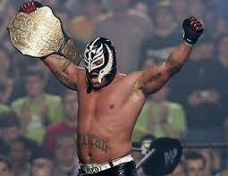
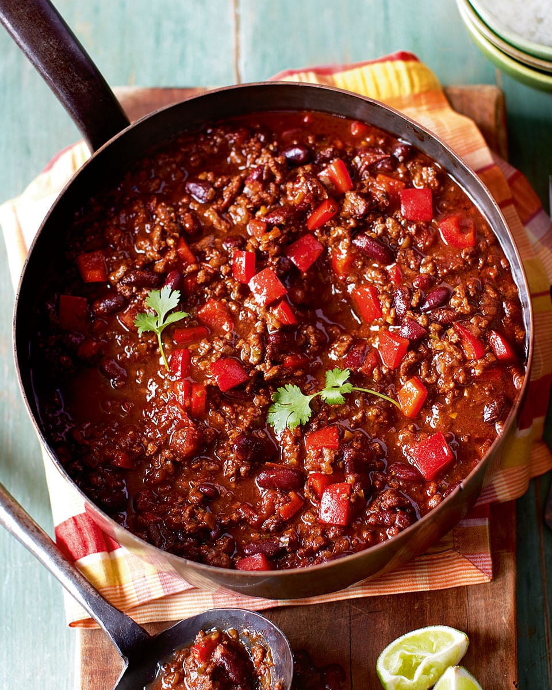

Ray Mysterio's Chili Con Carnage
Back to the ring...

Hey, amigos! It's your favorite luchador, Ray Mysterio, coming at you with a recipe that'll make your taste buds do a high-flying flip!
That's right, I'm talking about my very own Chili Con Carnage. Just like in the ring, this chili packs a punch and is full of surprises. So, let's step into the kitchen and get ready to rumble!

Ingredients:
- 1 pound ground beef (or ground turkey for a healthier option)
- 1 onion, chopped like an opponent in the corner
- 3 cloves garlic, minced with the precision of a dropkick
- 1 red bell pepper, diced into bite-sized pieces
- 1 green bell pepper, diced (for that lucha libre color!)
- 1 can (15 ounces) black beans, drained and rinsed
- 1 can (15 ounces) kidney beans, drained and rinsed
- 1 can (15 ounces) diced tomatoes
- 1 can (6 ounces) tomato paste
- 2 cups beef broth (or vegetable broth if you prefer)
- 2 tablespoons chili powder (adjust for your heat preference)
- 1 tablespoon cumin
- 1 teaspoon paprika
- Salt and pepper to taste
- Jalapeños for extra heat (optional)
Instructions:
- In a luchador-sized skillet, cook the ground beef (or turkey) over medium heat until it's browned and crumbled. Drain any excess fat, just like I'd escape a submission hold in the ring.
- Add the chopped onion, minced garlic, and diced peppers to the skillet. Cook them until they start to soften and the aroma hits you like a flying hurricanrana.
- Now, it's time for the canned ingredients to make their entrance. Add the black beans, kidney beans, diced tomatoes, and tomato paste to the mix. Stir it all up, ensuring that everyone in the ring is working together.
- Pour in the beef (or vegetable) broth and give it a good stir. It's time to let the flavors brawl together. Bring it all to a boil, and then reduce the heat to let it simmer for about 20 minutes.
- Time to add the finishing moves! Sprinkle in the chili powder, cumin, paprika, and season with salt and pepper. If you're feeling extra daring, throw in some sliced jalapeños for a high-flying kick of heat.
- Let your Chili Con Carnage simmer for another 10-15 minutes, allowing all the flavors to come together like a tag team maneuver.
- Serve it up in big bowls, just like I wear my iconic mask. You can top it with shredded cheese, a dollop of sour cream, or some chopped cilantro for added flair.
And there you have it, amigos! Ray Mysterio's Chili Con Carnage, ready to give your taste buds the 6-1-9 treatment! Enjoy this spicy, hearty dish with your familia and friends, and let the flavors do their own special dance in the ring of your mouth. Remember, the secret ingredient is always a touch of lucha libre spirit! Arriba!